Estás en: Inicio > Rutas
Escoge una ruta:
Ruta 1: Senda del Oso
Datos sobre la ruta
Información
- Tipo: Senderismo
- Descripción: Pista peatonal y cicloturista habilitada sobre la antigua caja de un ferrocarril minero
- Transporte: A pie o en bicicleta
- Agencia: MaquilAventura (alquier de bicicletas)
- Personas adecuadas: Todos
- Recomendación: 10
- Duración: 8 horas
Localización
- Lugar: Area recreativa de Tuñon
- Dirección: Tuñon, Asturias
- Coordenadas: 43.2942007, -5.9831974, 144.6635760
Hitos
- Hito 1: Desfiladero de las Xanas (43.2778461, -5.9915034, 176.8771167 m)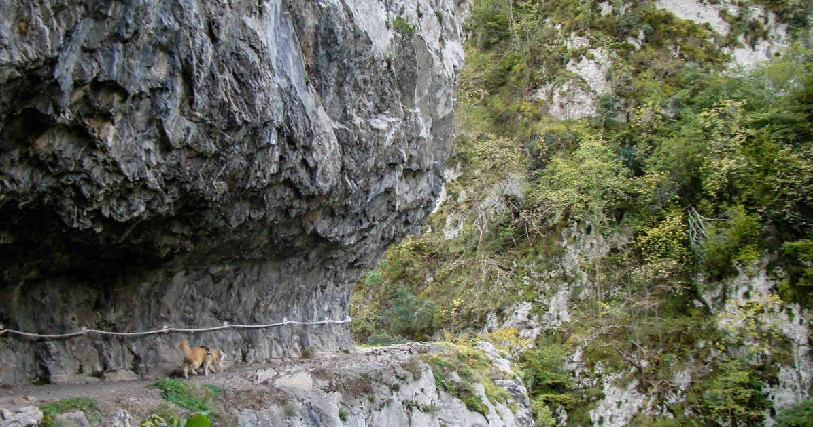
- Hito 2: Area Recreativa de Buyera (43.2630167, -6.0030836, 183.3392121 m)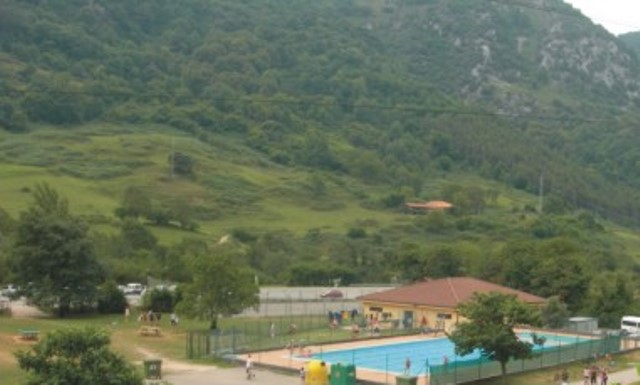
- Hito 3: Cercado de osas (43.2578451, -6.0051840, 200.3455615 m)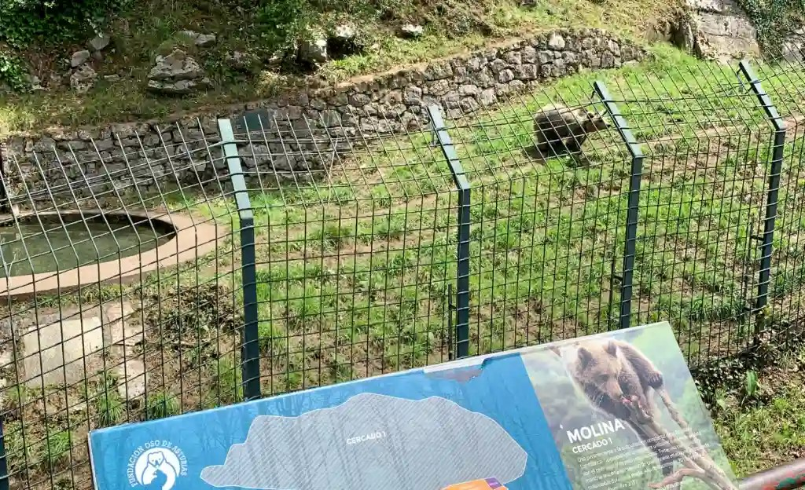
- Hito 4: Desfiladero de PeñasJuntas (43.2306637, -6.0358814, 236.7933025 m)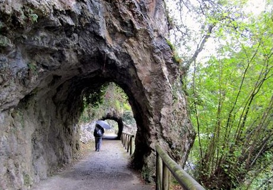
- Hito 5: Desfiladero de Valdecerezales (43.1778536, -6.0834632, 442.3508823 m)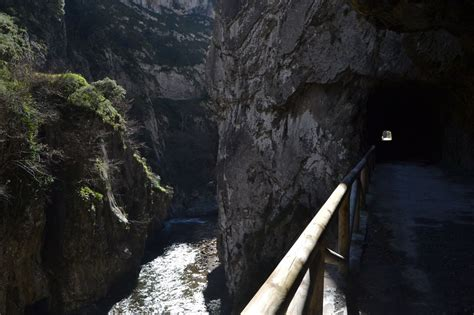
Altimetría:
Ruta 2: Puertos de Marabio
Datos sobre la ruta
Información
- Tipo: Senderismo
- Descripción: Ruta circular por una extensa pradería de montaña
- Transporte: A pie
- Agencia: Sin agencia
- Personas adecuadas: Todos, recomendado para niños
- Recomendación: 9
- Duración: 2 horas 30 minutos
Localización
- Lugar: Ermita de Santa Ana
- Dirección: Ermita de Santa Ana, Teverga, Asturias
- Coordenadas: 43.1992751, -6.1115043, 995.5247216
Hitos
- Hito 1: Fuente (43.2011690, -6.1186111, 983.4061311 m)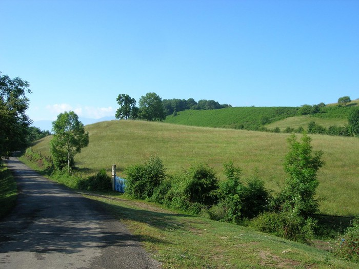
- Hito 2: Pico Caldoveiro (43.2175067, -6.1191928, 1052.3946822 m)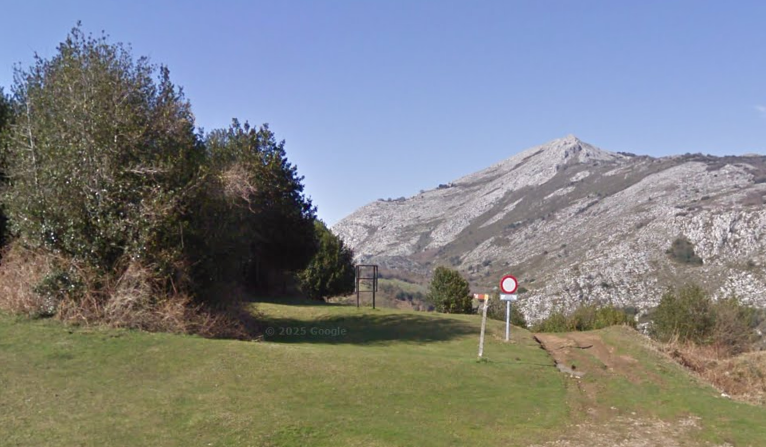
- Hito 3: Información (43.2172082, -6.1134600, 988.1801284 m)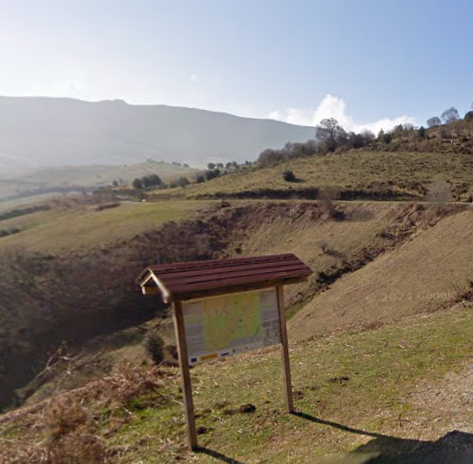
- Hito 4: Casa de Don Pablo (43.2166728, -6.1113247, 974.3128216 m)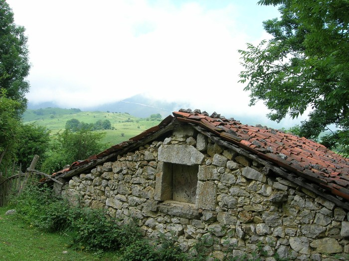
- Hito 5: Puertu de Marabiu (43.1997656, -6.1110938, 998.0000232 m)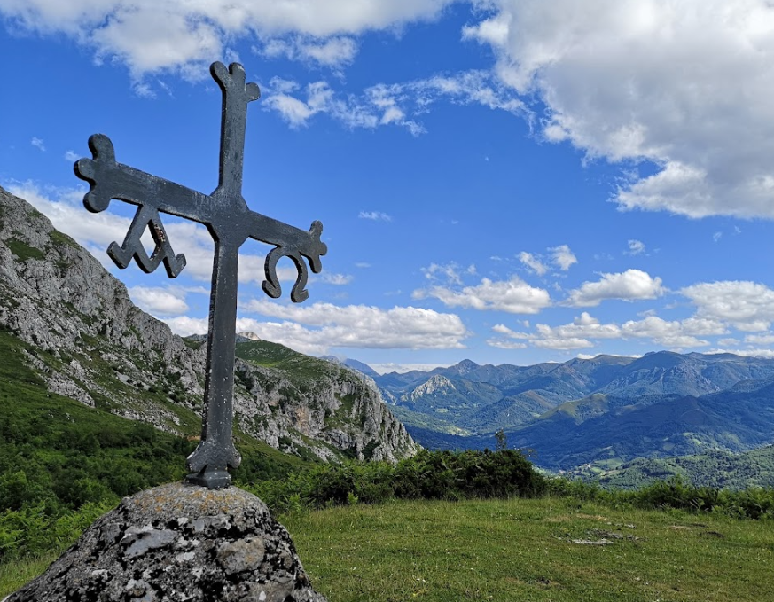
Altimetría:
Ruta 3: Las brañas de Vicenturo y Cueiro
Datos sobre la ruta
Información
- Tipo: Senderismo
- Descripción: Donde tradicionalmente pasta durante el verano el ganado de los pueblos de Campiello, Taxa y Urria
- Transporte: A pie
- Agencia: Sin agencia
- Personas adecuadas: Todos, aunque puede ser difícil para niños
- Recomendación: 9
- Duración: 4 horas
Localización
- Lugar: Urría
- Dirección: Urría, Teverga, Asturias
- Coordenadas: 43.1747966, -6.1570672, 891.1833800
Hitos
- Hito 1: Cuadras de la Conca (43.1813765, -6.1597003, 1141.2631048 m)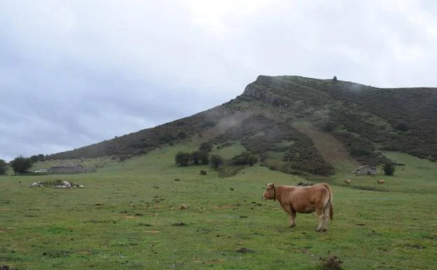
- Hito 2: Vicenturo (43.1901905, -6.1652772, 1235.5815727 m)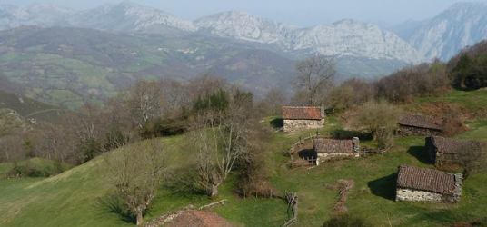
- Hito 3: Fuente Brana de Taja (43.1843896, -6.1802486, 1273.2133808 m)

- Hito 4: Cueiro (43.1786715, -6.1915048, 1317.2619238 m)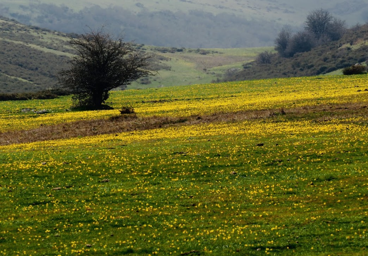
- Hito 5: Taxa (43.1702665, -6.1725948, 967.5474066 m)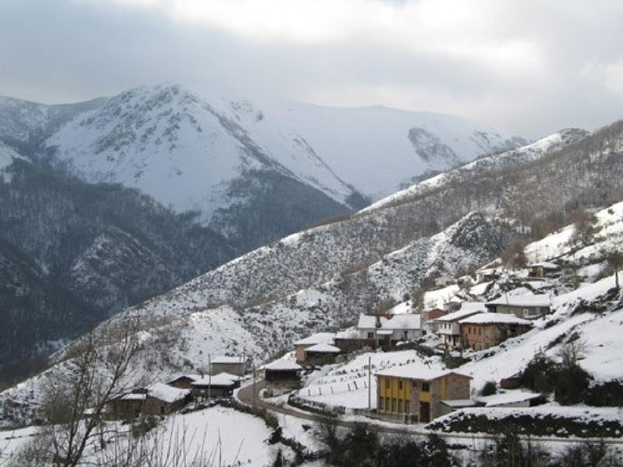
Altimetría: